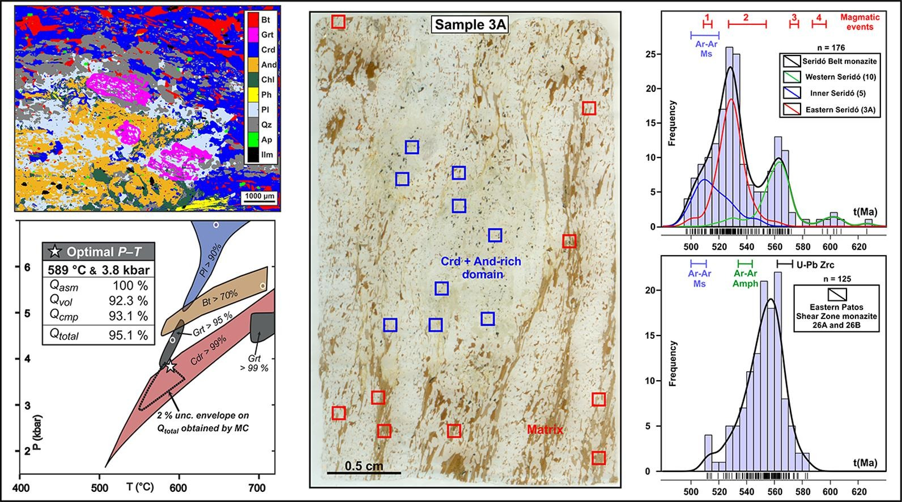

Long-lived inracontinenal deformation associated with high geothermal gradients in the Seridó Belt (Borborema Province, Brazil)

Resumo em Português
A Província Borborema (NE do Brasil) experimentou ampla deformação intracontinental associada ao metamorfismo de baixa pressão durante a amalgamação Neoproterozoico-Cambriana do Gondwana Ocidental. A deformação intracontinental disseminada foi impulsionada por tensões tectônicas derivadas de duas colisões continentais reportadas na literatura em ~630–610 Ma e inclui o desenvolvimento do Sistema de Zonas de Cisalhamento Borborema de escala continental. Neste estudo, investigamos rochas metassedimentares do Cinturão Seridó e da porção leste da Zona de Cisalhamento Patos, que ocorrem em uma zona de deformação intracontinental a várias centenas de quilômetros das zonas de colisão reconhecidas.Utilizando dados de campo, mapeamento composicional quantitativo, modelagem termodinâmica e petrocronologia em monazita, delimitamos as condições metamórficas e a duração da deformação intracontinental no interior da Província Borborema. Monazitas de porções de migmatito rico em leucossoma na porção leste da Zona de Cisalhamento Patos exibem idades ²⁰⁶Pb/²³⁸U variando de 580 ± 13 a 512 ± 11 Ma (n = 125), com agrupamento em ~570–550 Ma (n = 70). Xistos portadores de estaurolita do Cinturão Seridó ocidental exibem ampla variação de idades ²⁰⁶Pb/²³⁸U entre 626 ± 13 e 519 ± 12 Ma (n = 50), com agrupamento bem definido entre ~570 e 550 Ma (n = 37). Xistos a granada-andaluzita-cordierita do Cinturão Seridó interno e oriental exibem idades ²⁰⁶Pb/²³⁸U em monazita variando de ~550 a 500 Ma (n = 126).A modelagem termodinâmica iterativa utilizando a composição bulk local de um nódulo rico em Crd + And forneceu condições P-T ótimas de ~590 °C e 3,8 kbar. Os dados apresentados indicam que a deformação intracontinental no interior da Província Borborema foi de longa duração e perdurou até pelo menos 530–525 Ma, associada a condições de gradiente geotérmico elevado que reduziram a resistência litosférica, permitindo o desenvolvimento e a manutenção do Sistema de Zonas de Cisalhamento Borborema.